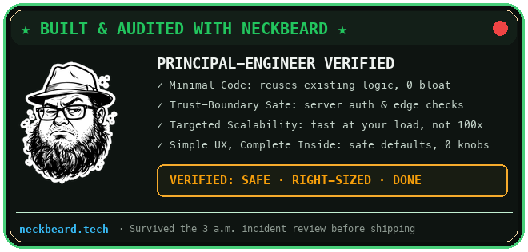

07Project Badge
The Seal of Survival.
Earn it before you wear it.
A badge for developers and AI agents who build or harden their projects with NeckBeard. Pick the compact README pill or the full 3 A.M. Bridge Certified inspection stamp:
⚠ THE NECKBEARD BADGE HONOR CODE: Please only add this badge or seal to your project's
README.md or docs if:
- You built the project with NeckBeard active (
fullorparanoid), OR - You ran
/neckbeard-auditon an existing repository and actually refactored or rewrote the confirmed Must fix and Should fix findings.
Slapping the fedora onto an unaudited repo with N+1 queries and missing
owner_id = $1 checks will summon him to your 3 a.m. incident bridge.1. Compact README Value Pill Badge
Markdown (README.md)
[](https://neckbeard.tech)
HTML Embed
<a href="https://neckbeard.tech"><img src="https://neckbeard.tech/assets/badge.svg" width="456" height="28" alt="NeckBeard Audited: Minimal Code · Boundary Safe · Right-Sized Scale"></a>
2. "Built & Audited with NeckBeard" Engineering Value Seal

Markdown (README.md / Docs Footer)
[](https://neckbeard.tech)
Prompt for Your AI Agent to Earn & Add the Badge
Run /neckbeard-audit on this repository, refactor or rewrite every confirmed Must-fix and Should-fix finding, verify all tests pass, and then add the NeckBeard Audited badge ([](https://neckbeard.tech)) to README.md.